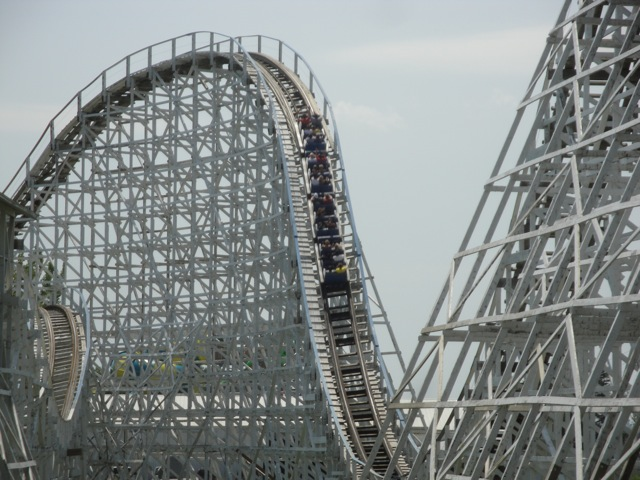
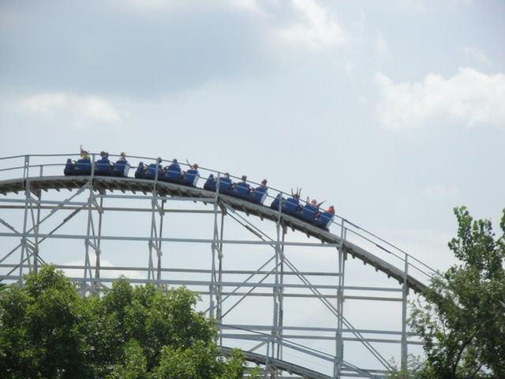
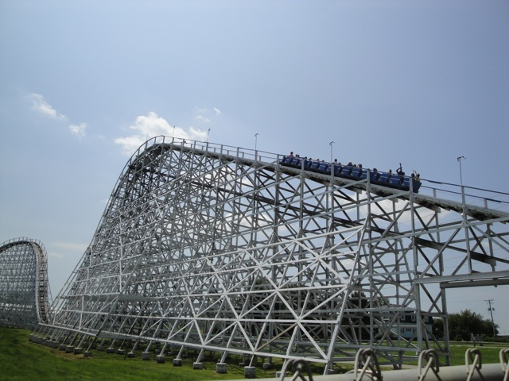
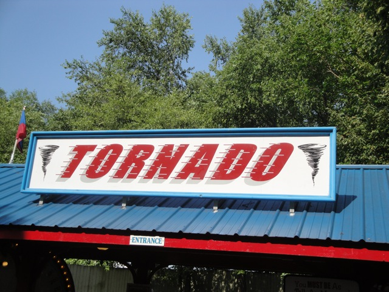
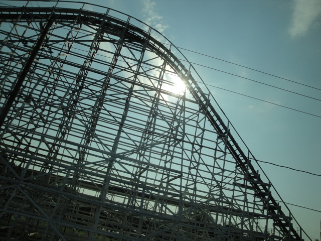

| |
Tornado Review

We're here at Adventureland. Today, we're here to review Tornado. This is not only Adventureland's first roller coaster, but it also serves as the park's out and back woodie while Outlaw is the parks twister coaster. After pulling down the buzz bars (this park is awesome), we're off! You roll around a big turn and get an ever so lovely view of corn. Because if there's one thing Iowa lacks, it's corn! =) Then we get up the lifthill. Yeah, yeah. It's just a lifthill. Nothing special. Soon, you reach the top. We then head down the first drop. While it's nothing amazing, it does give us some good speed and makes us a smile. So it does its job. You then head up the first hill. You get a little air on the top of this hill, but really, it's not much. I'd say it's about on par with Millenium Force (for this hill at least). This hill is just here for the sake of having a big hill and giving us a fun second drop. We then head up into another airtime hill, which is MUCH better than the first one. This one gives us some nice floater air and definetly withpasses Millenium Force. At the bottom of the airtime hill, we get some decent headchoppers before heading up yet another airtime hill to of course, give us some decent floater air. We then rise up and then get some good laterals as we head into a turnaround. However, we quickly turn around and then head back down another fun drop. We then go up another hill. The first half is like a normal airime hill and gives us some more decent air, but the second half actually gives us some laterals and is less steep. We then head up and get some more floater air through another bunny hop. We then go up another bunny hop to not only get some floater air, but some laterals as well. Yeah. Fun. =) We then rise up and go into the brake run. It's over already. =( But hey, we had some good fun on this ride. True, it's not amazing or crazy, but it is a really fun wooden coaster that gives you some floater air. While I certainly wouldn't rave about it in any talk about America's best woodies, it is a fun ride that I would recommend to anyone going to Adventureland.
7/10
Location: Adventureland
Opened: 1978
Built by: William Cobb
Last Ridden: August 6, 2010
Tornado Photos





Home
|